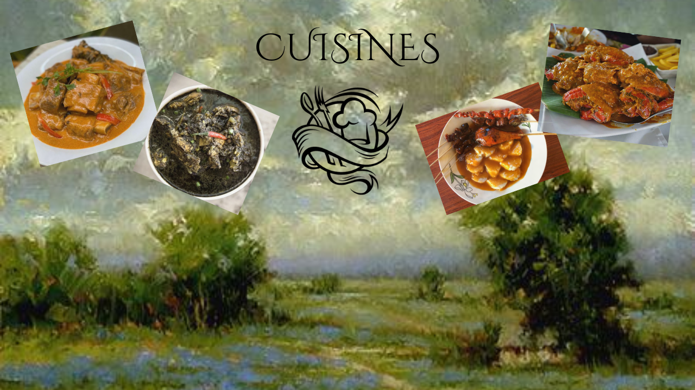

BEEF KULMA is for a comforting and flavorful experience. This dish features beef cubes stewed in a rich and aromatic curry sauce, perfect with rice.
TIYULA ITUM is literally meaning "black soup," this unique dish showcases a rich beef broth colored black from burnt coconut and infused with aromatic spices. It's a surprisingly delicious and savory dish, often served with rice.
SATTI is a popular breakfast dish in Zamboanga, featuring skewered chicken or beef served with a spicy and tangy sauce.
CURACHA is a crab dish is typically served with a rich and flavorful sauce made from coconut milk, crab fat, and spices.
